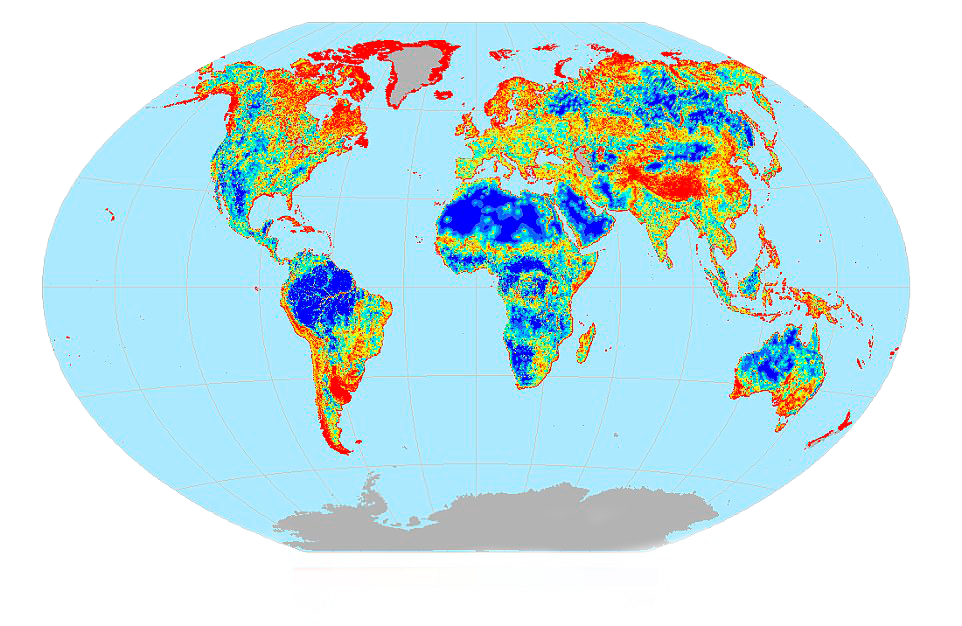

Физиология и модели поведения морских млекопитающих претерпели изменения, позволяющие им лучше приспособиться к жизни в море. Для давно возникших таксонов морских млекопитающих характерны изменения в форме тела, улучшающие её гидродинамичность. У китообразных, сирен и ластоногих тело за время эволюции приобрело обтекаемую форму.Задние конечности у первых двух групп атрофировались, а у третьей поменяли форму так, чтобы обеспечивать более эффективное передвижение в водной среде.
Географическое распространение морских млекопитающих по морям и океанам Земли не равномерно и не случайно. Ареал конкретных видов может определяться глубиной, температурным и океанографическим режимом, и в частности морскими течениями , а для пагофильных видов (среда обитания которых связана со льдами) — формированием и движением морского льда
